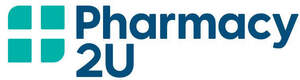
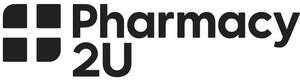

Trade Mark Journal No.2025/035 29 August 2025
UK00004251525 19 August 2025 (3,5,8,9,10,16,21,35,36,39,42,44)
Mark 1

Mark 2

- Class 3
- Abrasive bands; abrasive boards for use on fingernails; abrasive emery paper; abrasive paper for use on the fingernails; adhesives for artificial nails; adhesives for cosmetic purposes; adhesives for cosmetic use; adhesives for false eyelashes, hair and nails; after sun creams; after sun moisturisers; aftershave lotions; aftershave; age retardant gel; age retardant lotion; age spot reducing creams; agents for removing wax; animal care products; anti perspirants; anti-ageing creams; anti-perspirants; anti-wrinkle creams [for cosmetic use]; aromatherapy lotions; aromatherapy oil; aromatherapy preparations; aromatic essential oils; artificial nails for cosmetic purposes; astringents for cosmetic purposes; baby care products (non-medicated -); bath and shower gels, not for medical purposes; bath beads; bath creams (non-medicated -); bath creams and bath foams; bath oils for cosmetic purposes; bath preparations; beauty care cosmetics; beauty care preparations; beauty creams; beauty masks; bleaching preparations for cosmetic purposes; body cleaning and beauty care preparations; body lotions and creams; body lotions; breath fresheners; cleansing masks; collagen preparations for cosmetic application; colognes; cosmetic kits; cosmetic masks; cosmetic oils; cosmetic preparations for bath and shower; cosmetics all for sale in kit form; cosmetics and cosmetic preparations; cosmetics; cream soaps; creams (soap -) for use in washing; creams for cellulite reduction; creams for firming the skin; creams for fixing hair; creams for tanning the skin; dandruff shampoo; decorative cosmetics; dental care preparations; dentifrices and mouthwashes; dentifrices; denture cleaners and polishers; deodorant preparations for personal use; deodorants and anti perspirants; deodorants; depilatories; dyes (cosmetic -); dyes for the hair; eau de cologne; essential oils; exfoliating creams; exfoliating scrubs for cosmetic purposes; eye gels; eyelashes; facial washes; false hair (adhesives for affixing -); false nails; hair care preparations; hair lotions; hair preparations and colorants; hair shampoo; hair spray; hair styling gels; hair styling lotions; hairstyling serums; hand gels; hand lotion (non-medicated -); lip balms; lipstick cases; lipstick; make-up removers; make-up; massage oils and lotions; moisturisers; moisturising preparations; mouth fresheners and sprays; mouthwash; mouthwashes; nail cosmetics; nail varnish removers; nail varnish; non medicated dental rinses; non medicated foot creams and foot preparations; non medicated mouth washes; non medicated toilet preparations, beauty preparations, preparations for the care of the body; non-medicated toilet preparations; paper hand towels impregnated with cleaning agents; paper hand towels impregnated with cosmetics; perfumes; pet shampoos; potpourri; preparations for application to or for the care of the skin, scalp, hair or nails; preparations for cleaning and cleansing the skin; sanitary preparations being toiletries; self tanning lotions; shampoos; shave creams; shaving and after shaving preparations; shaving balm; shaving creams and gels; shaving foams; shaving gels; shaving preparations; shaving sets, comprised of shaving cream and aftershave; shaving soaps and shaving lotions; shower and bath foam; shower and bath gel; shower gels and shower creams; shower preparations; skin care lotions [cosmetic]; skin cleansers [cosmetic]; skin creams; skincare cosmetics; skincare preparations; skincare products; slimming aids [cosmetic], other than for medical use; slimming purposes (cosmetic preparations for -); soaps, sanitary preparations and substances; soaps; styling gels for the hair; styling lotions; sun barriers [cosmetics]; sun block [cosmetics]; sun bronzers; sun care lotions; sun creams; sunscreen preparations; sunscreens; sun tanning preparations [cosmetics]; talcum powder; tanning preparations; teeth cleaning (preparations for -); tints for the beard; tints for the hair; tissues impregnated with cosmetics; toilet waters; toiletries; toiletry preparations; tooth care preparations; tooth powders and toothpastes; toothcare and tooth cleaning preparations; toothpaste; varnish (nail -); varnish-removing preparations.
- Class 5
- Absorbent articles for personal hygiene; absorbent cotton for medical purposes; absorbent pads; acne creams [pharmaceutical preparations]; acne medication; adhesive compositions for medical use; adhesive dressings; adhesive plasters; adult diapers; air deodorizing preparations; air fresheners; alcohol for pharmaceutical purposes; alkaloids for medical purposes; allergy medication; allergy relief preparations and substances; aloe vera preparations for pharmaceutical purposes; amino acids for medical purposes; anaesthetics; analgesic preparations; animal repellents; antibacterial acne preparations; antibacterial handwashes; anti-bacterial pharmaceutical preparations; anti-bacterial preparations and substances; antibiotic food supplements for animals; antibiotics for fish; antibiotics for human use; antibiotics for veterinary use; anti-cancer drugs; antifungal antibiotics; anti-fungal preparations and substances; antihistamines; anti-inflammatories; anti-insect spray; antimalarial preparations and substances; anti-pruritics; antiseptic preparations; antiseptics; anti-viral agents; antiviral antibiotics; antiviral preparations; appetite suppressants for medical purposes; aspirin; asthma treatment preparations; astringents [pharmaceutical]; athlete's foot preparations; babies' creams [medicated]; babies' diapers; baby food; bacterial infection preparations and substances; fungal infection preparations and substances; viral infection preparations and substances; bandages (hygienic -); bandages for dressings; bandages for skin wounds; bark extract for pharmaceutical use; bark extract for veterinary use; bath preparations for medical purposes; beta blockers; beverages for infants; body creams [medicated]; breast-nursing pads; breath refreshers for medical purposes; bunion pads; burn dressings; capsules for medicines; cardiovascular agents for medical purposes; cardiovascular pharmaceuticals; catarrh and congestion relief preparations and substances; chemical adjuvants for medical purposes; chemical preparations for veterinary purposes; cholesterol reducers; cigarettes (tobacco-free -) for medical purposes; cleansing solutions for medical use; cod liver oil; cold sore treatment preparations; collagen for medical purposes; compresses; contact lens cleaning preparations and contact lens solutions; contraceptive preparations and substances; corn pads; corn remedies; cotton swabs for medical use; cotton wool for medical purposes; cough suppressants; creams for dermatological use; cytostatics for pharmaceutical purposes; dandruff (pharmaceutical preparations for treating -); decongestants; dental anaesthetics; deodorants, other than for human beings or for animals; desensitising spray; diagnosis of pregnancy (chemical preparations for the -); diagnostic preparations and materials; diagnostic preparations for medical or veterinary purposes; diarrhoea medication; diarrhoea relief preparations and substances; diet capsules; dietary and nutritional supplements; dietary foods, dietary and health food supplements; dietary pet supplements in the form of pet treats; dietary supplements and dietetic preparations; dietary supplements for animals; dietary supplements for humans not for medical purposes; dietary supplements for humans; dietary supplements for medical use; digestants; digestive enzymes; digestives for pharmaceutical purposes; disinfectants; disposable diapers; disposable training pants [diapers]; diuretics; dog washes [insecticides]; douching preparations for medical purposes; dressings, medical; ear drops; emetics; enzymes for medical purposes; enzymes for veterinary purposes; epsom salts; evacuants [purgatives]; expectorants; eye drops and eye lotions for medicated use; eye moisturisers and ointments for medical use; eye washes; fever relief preparations and substances; first aid kits; flea exterminating preparations; food for diabetics; food supplements; foods for babies, infants and invalids; foot odour control preparations and substances; fungal infection preparations and substances; fungicides; gastrointestinal gas relief substances; gauze; general anaesthetics; haemostatic preparations; hair growth preparations (medicinal -); hair loss preparations and substances; herbal medicine; herbal remedies; herbal teas for medicinal purposes; homeopathic pharmaceuticals; homeopathic preparations and substances; incontinence pads; infant formula; infusions (medicinal -); inhalant anaesthetics; inhalants; insect exterminating agents; insect repellents; insect repellent preparations and substances; insect repellents; insulin; iodine; lice repellent; local-anaesthetics; lotions for pharmaceutical purposes; lotions for veterinary purposes; meal and appetite suppressants; medical and surgical dressings; medical mouthwashes; medical preparations; medicated creams; medicated drinks; medicated foot creams and foot preparations; medicated shampoos; medicated sugar; medicated toilet preparations; medicinal healthcare preparations; medicine; medicines for animals; medicines for veterinary purposes; menopause testing kits; mineral supplements to foodstuffs; mineral water salts; mosquito repellents; nasal lubricants; nasal sprays for medical purposes; non-prescription medicines; nose drops; nutritional supplements for veterinary use; nutritional supplements; odour absorbing materials; oils (medicinal -); ovulation test kits; pain relief medication for veterinary purposes; pain relief medication; pain relief preparations and substances; paracetamol; pet odour neutraliser; pharmaceutical and medicinal preparations and substances; pharmaceutical compositions; pharmaceutical preparations for animals; pharmaceutical preparations for dental use; pharmaceutical preparations for human use; pharmaceutical preparations for medical purposes; plasters and materials for dressings; pregnancy testing preparations and kits; preparations for the neutralising of odours; royal jelly dietary supplements; royal jelly for medical purposes; salts for mineral water baths; sanitary preparations and articles; sanitary preparations for medical purposes; sanitary preparations for veterinary use; sanitary preparations; sanitary tampons; sedatives; slimming purposes (medical preparations for -); soporifics; spermicides and lubricants; sterilising agents; sticking plasters; substances for purposes of sexual stimulation; substances for the purposes of increasing mental alertness; sunburn ointment; talcum powder (medicated -) for babies; tanning pills; tapes for strapping [medical]; threadworm and roundworm infestation relief; throat lozenges; tranquillizers; veterinary preparations and products; viral infection preparations and substances; vitamin and mineral supplements for pets; vitamin and mineral supplements; vitamins; homeopathic preparations and substances.
- Class 8
- Atomisers; beard shaping tool; blades; can openers; cases for manicure instruments; cases for razors; choppers; cleavers; cuticle scissors; cuticle tweezers; cutlery; cutting bars; cutting tools; depilation appliances; disposable razors; dog clippers; egg slicers; electric hair clippers for animals [hand instruments]; electric hair crimpers; electric hair curling irons; electric hair cutters; electric irons for styling hair; electric nail buffers; electric nail files; electric nasal hair trimmers; electric pedicure sets; electric razors; emery files; fleshing knives; forks; hair clippers for animals [hand instruments]; hair clippers for personal use, electric and non-electric; hair cutting scissors; hair styling appliances; hairdressing scissors; hair-removing tweezers; hand tools; ice picks; knife steels; knives; ladles for wine; ladles; mallets; manicure sets; mincing knives; nail buffers; nail clippers; nail files; nail scissors; nasal hair trimmers; oven to tableware in the nature of knives, forks and spoons; oyster openers; palette knives; pedicure implements; pedicure sets; pizza cutters; razors, electric or non-electric; razors; scissor sharpeners (hand operated -); scissors; sharpening instruments; sharpening steels and sharpening stones; silver plate knives, forks and spoons; spoons; table forks; tableware (knives, forks and spoons); tin openers; tweezers; vegetable choppers, shredders and slicers; vegetable knives.
- Class 9
- Downloadable computer application software for providing information regarding prescription medications; downloadable computer application software for pharmacy patients to receive information and updates regarding pharmacy orders, and renewals and alerts regarding prescription medications.
- Class 10
- Insoles and foot cushions, pillows and supports for medical purposes; abdominal corsets; acupressure mats; adult sexual aids; air mattresses, for medical purposes; air pillows for medical purposes; anti-rheumatism rings; anti-snoring devices; apparatus for achieving physical fitness [for medical use]; apparatus for acne treatment; apparatus for artificial respiration; apparatus for blood analysis; apparatus for taking blood samples; applicators for antibacterial preparations; applicators for medications; arch cushions [orthopaedic]; articular protheses; artificial joints; artificial limbs; artificial skin; artificial teeth; baby dummies; baby teething rings; bandages (supportive -); bandages, elastic; bandages, supports and braces; bandaging materials [supportive]; blankets, electric, for medical purposes; blood glucose monitor; blood pressure monitors; blood pressure testing apparatus; body mass index (bmi) measuring devices for medical use; body massagers; breast implants; breast milk storage bottles; breast pumps; catheters for medical use; circulation booster for medical use; compression stockings; condoms; containers for medical waste; contraceptive devices; contraceptives and condoms; corsets for medical purposes; cushions (heating -), electric, for medical purposes; dental apparatus, electric; dental equipment; dental mirrors; dental picks; devices for the purposes of sexual stimulation; ear plugs; enema apparatus; erection maintenance rings; eye baths; eye droppers; face masks for surgical use; hearing aids; heart monitors; heart pacemakers; heat treatment apparatus; infrared forehead thermometers; inhalers for medical use; insoles and foot cushions, pillows and supports; knee bandages [supportive]; knee bandages, orthopedic; knee crutches; medical apparatus for the relief of pain; medical instruments for application in animal bodies; medical instruments for application in human bodies; orthopaedic foot cushions; orthopaedic footwear; orthopaedic supports; pelvic floor exercise equipment; rings for applying pressure to sexual organs; sheets for incontinents; socks for diabetics; socks for varicose veins; sponges (surgical -); supportive bandages; tennis elbow supports; thermal massage pads; thermal packs for first aid purposes; vacuum therapy system and devices for the purposes of sexual stimulation; vaginal trainers; vaporisers for medical purposes; walking aids for medical purposes; walking frames; cooling patches for medical use.
- Class 16
- Printed materials; leaflets, posters, calendars, magazines, postcards and brochures for the purposes of the promotion of and providing information regarding pharmaceutical and cosmetic products.
- Class 21
- Applicators for cosmetics; babies' potties; baby bath tubs; bath sponges; battery-powered dental flossers; bird baths; bird cages for domestic birds; bird feeders; bottle brushes; bottles; brush holders; brushes for cleaning babies' feeding bottles; brushes for pets; chamber pots; comb cases; combs; cups and beakers; dental floss; dental tape; denture baths; electric devices for attracting and killing insects; electric hair combs; electric make-up removing appliances; electric pet brushes; electric toothbrushes and combs; electric toothbrushes; exfoliating brushes; exfoliating mitts; hair combs; hairbrushes; household, domestic and kitchen utensils and containers; lint brushes; lint removers, electric or non-electric; loofahs; make-up brushes; make-up removing appliances; make-up sponges; medicated dental floss; milk bottle holders; mouse traps; pill boxes; tableware, other than knives, forks and spoons; toothbrushes; toothpicks; sugar tongs ; nut crackers; spatulas; bottles.
- Class 35
- Drug utilisation review services; pharmaceutical cost management services; strategic business analysis and business advice regarding pharmacy benefit management, pharmaceutical end-user behaviour, healthcare use behaviour; market study and analysis of healthcare, healthcare benefits, and pharmacy benefits effecting health behaviour change and choice at the patient level; market analysis and reporting of the effectiveness of tailored health messaging and support at the patient level; providing information in the field of pharmaceutical cost management as provided to pharmacy benefit management services clients, consultants and brokers; conducting and arranging business conferences in the field of pharmacy benefit management; retail or wholesale services and online retail store services relating to pharmaceutical, veterinary and sanitary preparations, medical supplies, animal grooming preparations, beauty implements for animals, beauty implements for humans, hair products, hygienic implements for animals, hygienic implements for humans, litter for animals, pharmaceutical preparations, medical preparations and physical therapy equipment, abrasive bands, abrasive boards for use on fingernails, abrasive emery paper, abrasive paper for use on the fingernails, adhesives for artificial nails, adhesives for cosmetic purposes, adhesives for cosmetic use, adhesives for false eyelashes, hair and nails, after sun creams, after sun moisturisers, aftershave lotions, aftershave, age retardant gel, age retardant lotion, age spot reducing creams, agents for removing wax, animal care products, anti perspirants, anti-ageing creams, anti-perspirants, anti-wrinkle creams [for cosmetic use], aromatherapy lotions, aromatherapy oil, aromatherapy preparations, aromatic essential oils, artificial nails for cosmetic purposes, astringents for cosmetic purposes, baby care products (non-medicated -), bath and shower gels, not for medical purposes, bath beads, bath creams (non-medicated -), bath creams and bath foams, bath oils for cosmetic purposes, bath preparations, beauty care cosmetics, beauty care preparations, beauty creams, beauty masks, bleaching preparations for cosmetic purposes, body cleaning and beauty care preparations, body lotions and creams, body lotions, breath fresheners, cleansing masks, collagen preparations for cosmetic application, colognes, cosmetic kits, cosmetic masks, cosmetic oils, cosmetic preparations for bath and shower, cosmetics all for sale in kit form, cosmetics and cosmetic preparations, cosmetics, cream soaps, creams (soap -) for use in washing, creams for cellulite reduction, creams for firming the skin, creams for fixing hair, creams for tanning the skin, dandruff shampoo, decorative cosmetics, dental care preparations, dentifrices and mouthwashes, dentifrices, denture cleaners and polishers, deodorant preparations for personal use, deodorants and anti perspirants, deodorants, depilatories, dyes (cosmetic -), dyes for the hair, eau de cologne, essential oils, exfoliating creams, exfoliating scrubs for cosmetic purposes, eye gels, eyelashes, facial washes, false hair (adhesives for affixing -), false nails, hair care preparations, hair lotions, hair preparations and colorants, hair shampoo, hair spray, hair styling gels, hair styling lotions, hairstyling serums, hand gels, hand lotion (non-medicated -), lip balms, lipstick cases, lipstick, make-up removers, make-up, massage oils and lotions, moisturisers, moisturising preparations, mouth fresheners and sprays, mouthwash, mouthwashes, nail cosmetics, nail varnish removers, nail varnish, non-medicated dental rinses, non-medicated foot creams and foot preparations, non-medicated mouth washes, non-medicated toilet preparations, beauty preparations, preparations for the care of the body, non-medicated toilet preparations, paper hand towels impregnated with cleaning agents, paper hand towels impregnated with cosmetics, perfumes, pet shampoos, potpourri, preparations for application to or for the care of the skin, scalp, hair or nails, preparations for cleaning and cleansing the skin, sanitary preparations being toiletries, self-tanning lotions, shampoos, shave creams, shaving and after shaving preparations, shaving balm, shaving creams and gels, shaving foams, shaving gels, shaving preparations, shaving sets, comprised of shaving cream and aftershave, shaving soaps and shaving lotions, shower and bath foam, shower and bath gel, shower gels and shower creams, shower preparations, skin care lotions [cosmetic], skin cleansers [cosmetic], skin creams, skincare cosmetics, skincare preparations, skincare products, slimming aids [cosmetic], other than for medical use, slimming purposes (cosmetic preparations for -), soaps, sanitary preparations and substances, soaps, styling gels for the hair, styling lotions, sun barriers [cosmetics], sun block [cosmetics], sun bronzers, sun care lotions, sun creams, sunscreen preparations, sunscreens, sun tanning preparations [cosmetics], talcum powder, tanning preparations, teeth cleaning (preparations for -), tints for the beard, tints for the hair, tissues impregnated with cosmetics, toilet waters, toiletries, toiletry preparations, tooth care preparations, tooth powders and toothpastes, toothcare and tooth cleaning preparations, toothpaste, varnish (nail -), varnish-removing preparations, absorbent articles for personal hygiene, absorbent cotton for medical purposes, absorbent pads, acne creams [pharmaceutical preparations], acne medication, adhesive compositions for medical use, adhesive dressings, adhesive plasters, adult diapers, air deodorizing preparations, air fresheners, alcohol for pharmaceutical purposes, alkaloids for medical purposes, allergy medication, allergy relief preparations and substances, aloe vera preparations for pharmaceutical purposes, amino acids for medical purposes, anaesthetics, analgesic preparations, animal repellents, antibacterial acne preparations, antibacterial handwashes, anti-bacterial pharmaceutical preparations, anti-bacterial preparations and substances, antibiotic food supplements for animals, antibiotics for fish, antibiotics for human use, antibiotics for veterinary use, anti-cancer drugs, antifungal antibiotics, anti-fungal preparations and substances, antihistamines, anti-inflammatories, anti-insect spray, antimalarial preparations and substances, anti-pruritics, antiseptic preparations, antiseptics, anti-viral agents, antiviral antibiotics, antiviral preparations, appetite suppressants for medical purposes, aspirin, asthma treatment preparations, astringents [pharmaceutical], athlete's foot preparations, babies' creams [medicated], babies' diapers, baby food, bacterial infection preparations and substances, fungal infection preparations and substances, viral infection preparations and substances, bandages (hygienic -), bandages for dressings, bandages for skin wounds, bark extract for pharmaceutical use, bark extract for veterinary use, bath preparations for medical purposes, beta blockers, beverages for infants, body creams [medicated], breast-nursing pads, breath refreshers for medical purposes, bunion pads, burn dressings, capsules for medicines, cardiovascular agents for medical purposes, cardiovascular pharmaceuticals, catarrh and congestion relief preparations and substances, chemical adjuvants for medical purposes, chemical preparations for veterinary purposes, cholesterol reducers, cigarettes (tobacco-free -) for medical purposes, cleansing solutions for medical use, cod liver oil, cold sore treatment preparations, collagen for medical purposes, compresses, contact lens cleaning preparations and contact lens solutions, contraceptive preparations and substances, corn pads, corn remedies, cotton swabs for medical use, cotton wool for medical purposes, cough suppressants, creams for dermatological use, cytostatics for pharmaceutical purposes, dandruff (pharmaceutical preparations for treating -), decongestants, dental anaesthetics, deodorants, other than for human beings or for animals, desensitising spray, diagnosis of pregnancy (chemical preparations for the -), diagnostic preparations and materials, diagnostic preparations for medical or veterinary purposes, diarrhoea medication, diarrhoea relief preparations and substances, diet capsules, dietary and nutritional supplements, dietary foods, dietary and health food supplements, dietary pet supplements in the form of pet treats, dietary supplements and dietetic preparations, dietary supplements for animals, dietary supplements for humans not for medical purposes, dietary supplements for humans, dietary supplements for medical use, digestants, digestive enzymes, digestives for pharmaceutical purposes, disinfectants, disposable diapers, disposable training pants [diapers], diuretics, dog washes [insecticides], douching preparations for medical purposes, dressings, medical, ear drops, emetics, enzymes for medical purposes, enzymes for veterinary purposes, epsom salts, evacuants [purgatives], expectorants, eye drops and eye lotions for medicated use, eye moisturisers and ointments for medical use, eye washes, fever relief preparations and substances, first aid kits, flea exterminating preparations, food for diabetics, food supplements, foods for babies, infants and invalids, foot odour control preparations and substances, fungal infection preparations and substances, fungicides, gastrointestinal gas relief substances, gauze, general anaesthetics, haemostatic preparations, hair growth preparations (medicinal -), hair loss preparations and substances, herbal medicine, herbal remedies, herbal teas for medicinal purposes, homeopathic pharmaceuticals, homeopathic preparations and substances, incontinence pads, infant formula, infusions (medicinal -), inhalant anaesthetics, inhalants, insect exterminating agents, insect repellents, insect repellent preparations and substances, insect repellents, insulin, iodine, lice repellent, local-anaesthetics, lotions for pharmaceutical purposes, lotions for veterinary purposes, meal and appetite suppressants, medical and surgical dressings, medical mouthwashes, medical preparations, medicated creams, medicated drinks, medicated foot creams and foot preparations, medicated shampoos, medicated sugar, medicated toilet preparations, medicinal healthcare preparations, medicine, medicines for animals, medicines for veterinary purposes, menopause testing kits, mineral supplements to foodstuffs, mineral water salts, mosquito repellents, nasal lubricants, nasal sprays for medical purposes, non-prescription medicines, nose drops, nutritional supplements for veterinary use, nutritional supplements, odour absorbing materials, oils (medicinal -), ovulation test kits, pain relief medication for veterinary purposes, pain relief medication, pain relief preparations and substances, paracetamol, pet odour neutraliser, pharmaceutical and medicinal preparations and substances, pharmaceutical compositions, pharmaceutical preparations for animals, pharmaceutical preparations for dental use, pharmaceutical preparations for human use, pharmaceutical preparations for medical purposes, plasters and materials for dressings, pregnancy testing preparations and kits, preparations for the neutralising of odours, royal jelly dietary supplements, royal jelly for medical purposes, salts for mineral water baths, sanitary preparations and articles, sanitary preparations for medical purposes, sanitary preparations for veterinary use, sanitary preparations, sanitary tampons, sedatives, slimming purposes (medical preparations for -), soporifics, spermicides and lubricants, sterilising agents, sticking plasters, substances for purposes of sexual stimulation, substances for the purposes of increasing mental alertness, sunburn ointment, talcum powder (medicated -) for babies, tanning pills, tapes for strapping [medical], threadworm and roundworm infestation relief, throat lozenges, tranquillizers, veterinary preparations and products, viral infection preparations and substances, vitamin and mineral supplements for pets, vitamin and mineral supplements, vitamins, homeopathic preparations and substances, atomisers, beard shaping tool, blades, can openers, cases for manicure instruments, cases for razors, choppers, cleavers, cuticle scissors, cuticle tweezers, cutlery, cutting bars, cutting tools, depilation appliances, disposable razors, dog clippers, egg slicers, electric hair clippers for animals [hand instruments], electric hair crimpers, electric hair curling irons, electric hair cutters, electric irons for styling hair, electric nail buffers, electric nail files, electric nasal hair trimmers, electric pedicure sets, electric razors, emery files, fleshing knives, forks, hair clippers for animals [hand instruments], hair clippers for personal use, electric and non-electric, hair cutting scissors, hair styling appliances, hairdressing scissors, hair-removing tweezers, hand tools, ice picks, knife steels, knives, ladles for wine, ladles, mallets, manicure sets, mincing knives, nail buffers, nail clippers, nail files, nail scissors, nasal hair trimmers, nut crackers, oven to tableware in the nature of knives, forks and spoons, oyster openers, palette knives, pedicure implements, pedicure sets, pizza cutters, razors, electric or non-electric, razors, scissor sharpeners (hand operated -), scissors, sharpening instruments, sharpening steels and sharpening stones, silver plate knives, forks and spoons, spatulas, spoons, table forks, tableware (knives, forks and spoons), tin openers, tweezers, vegetable choppers, shredders and slicers, vegetable knives, downloadable computer application software, scales, electronic scales, electronic health scanning machines and handheld devices, supplements and nutrients for animals, animal grooming products, vitamins and herbal remedies for animals, insoles and foot cushions, pillows and supports for medical purposes, abdominal corsets, acupressure mats, adult sexual aids, air mattresses, for medical purposes, air pillows for medical purposes, anti-rheumatism rings, anti-snoring devices, apparatus for achieving physical fitness [for medical use], apparatus for acne treatment, apparatus for artificial respiration, apparatus for blood analysis, apparatus for taking blood samples, applicators for antibacterial preparations, applicators for medications, arch cushions [orthopaedic], articular protheses, artificial joints, artificial limbs, artificial skin, artificial teeth, baby dummies, baby teething rings, bandages (supportive -), bandages, elastic, bandages, supports and braces, bandaging materials [supportive], blankets, electric, for medical purposes, blood glucose monitor, blood pressure monitors, blood pressure testing apparatus, body mass index (bmi) measuring devices for medical use, body massagers, bottles, breast implants, breast milk storage bottles, breast pumps, catheters for medical use, circulation booster for medical use, compression stockings, condoms, containers for medical waste, contraceptive devices, contraceptives and condoms, corsets for medical purposes, cushions (heating -), electric, for medical purposes, dental apparatus, electric, dental equipment, dental mirrors, dental picks, devices for the purposes of sexual stimulation, ear plugs, enema apparatus, erection maintenance rings, eye baths, eye droppers, face masks for surgical use, hearing aids, heart monitors, heart pacemakers, heat treatment apparatus, infrared forehead thermometers, inhalers for medical use, insoles and foot cushions, pillows and supports, knee bandages [supportive], knee bandages, orthopaedic, knee crutches, medical apparatus for the relief of pain, medical instruments for application in animal bodies, medical instruments for application in human bodies, orthopaedic foot cushions, orthopaedic footwear, orthopaedic supports, pelvic floor exercise equipment, rings for applying pressure to sexual organs, sheets for incontinence, socks for diabetics, socks for varicose veins, sponges (surgical -), supportive bandages, tennis elbow supports, thermal massage pads, thermal packs for first aid purposes, vacuum therapy system and devices for the purposes of sexual stimulation, vaginal trainers, vaporisers for medical purposes, walking aids for medical purposes, walking frames, cooling patches for medical use, printed materials, leaflets, posters, calendars, magazines, postcards and brochures, applicators for cosmetics, babies' potties, baby bath tubs, bath sponges, battery-powered dental flossers, bird baths, bird cages for domestic birds, bird feeders, bottle brushes, bottles, brush holders, brushes for cleaning babies' feeding bottles, brushes for pets, chamber pots, comb cases, combs, cups and beakers, dental floss, dental tape, denture baths, electric devices for attracting and killing insects, electric hair combs, electric make-up removing appliances, electric pet brushes, electric toothbrushes and combs, electric toothbrushes, exfoliating brushes, exfoliating mitts, hair combs, hairbrushes, household, domestic and kitchen utensils and containers, lint brushes, lint removers, electric or non-electric, loofahs, make-up brushes, make-up removing appliances, make-up sponges, medicated dental floss, milk bottle holders, mouse traps, pill boxes, tableware, other than knives, forks and spoons, toothbrushes, toothpicks, sugar tongs; information, consultancy and advisory services relating to all the aforesaid services.
- Class 36
- Pharmacy benefit management services; medical benefit management services; advisory services and consultancy regarding health care benefits and pharmacy benefits; provision of information and analysis in the fields of healthcare benefits and pharmacy benefits; medicare prescription coverage plans services, namely, providing insurance underwriting and claims administration of medicare prescription drug plans for qualified beneficiaries; administration of pharmacy benefit plans; pharmacy benefit management services, namely, tracking, monitoring, assessing and analysing information and statistics regarding patient prescription drug use and healthcare habits, and providing a predictive model to determine patients' future prescription drug and healthcare habits, all to identify potential cost savings and for clinical benefits; pharmacy benefit management services for organised labour; information, consultancy and advisory services relating to all the aforesaid services.
- Class 39
- Arranging the delivery of prescriptions; delivery of goods by mail order; delivery of goods; delivery services; distribution services, namely, delivery of prescription medication; packaging and storage of goods; packaging of medication; packaging of products; pharmacy packaging service that aligns, sorts and packages a patient's medications by date and time into individual packets; refrigerated storage of goods; refrigerated transport of cold goods; storage of goods in warehouses; storage of goods; transport of goods; transport; transportation and storage of goods; transportation logistics; travel arrangements; wrapping and packaging of goods; information, consultancy and advisory services relating to all the aforesaid services.
- Class 42
- Scientific and technological services and research and design relating thereto; industrial analysis and research services; design and development of computer hardware and software; platform as a service featuring computer software to permit users to identify, request and receive pharmacy products; non-downloadable software to permit users to identify, request and receive pharmacy products; providing a website featuring information about medical devices, diagnostics and drugs; providing medical and scientific research information in the fields of pharmaceuticals; information, consultancy and advisory services relating to all the aforesaid services.
- Class 44
- Pharmacy services; provision of medical advice and information; pharmacists' services to make up prescriptions; medical and healthcare services; pharmaceutical advisory services; pharmaceutical services; beauty advisory services; health advice and information services; health care; health screening; healthcare; advisory services and consultancy regarding healthcare; healthcare services, namely, wellness and disease management programs; medicare prescription coverage plan services, namely, disease management programs and complex case management services in the nature of providing health consultation services to patients with chronic conditions regarding medication compliance, and providing information regarding health and safety issues regarding chronic conditions; providing medical information and analysis in the fields of healthcare, pharmaceuticals; providing information in the field of healthcare as provided to pharmacy benefit management services clients, consultants and brokers; information, consultancy and advisory services relating to all the aforesaid services.
PHARMACY2U LIMITED
Representative: Squire Patton Boggs (UK) LLP